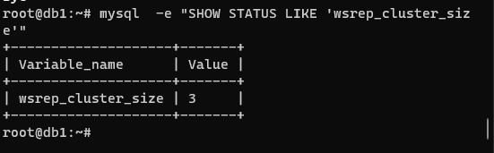
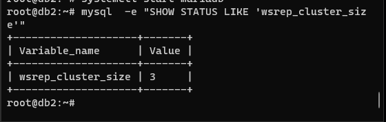
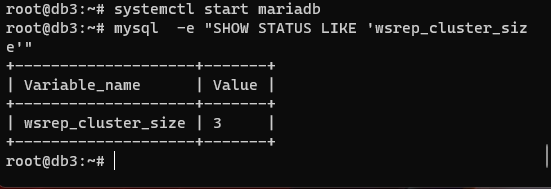

Install dan Setup Mariadb Cluster menggunakan Galera Cluster
Untuk membuat Clustering Database system di MariaDB maka bisa menggunakan Galera. Galera sendiri sudah termasuk kedalam paket instalasi pada MariaDB sehingga tidak dibutuhkan instalasi paket tambahan. Namun jika ingin menggunakan versi galera yang lebih tinggi seperti galera-3 di MariaDB 10.3 dan galera-4 di MariaDB 10.4 maka butuh menambahlak paket galera-3 dan galera-4 untuk menginstall wsrep provider librarynya.
Beberapa Fitur yang ditawarkan dari Galera Cluster diantaranya:
- True Multi-Master You can read and write to any node at any time. Changes to data on one node will be replicated on all.
- Synchronous Replication There is no slave lag, so no data is lost if a node crashes.
- Tightly Coupled All nodes hold the same state. There is no diverged data between nodes.
- Multi-Threaded Slave This allows for better performance and for any workload.
- No Master-Slave Failover There is no need for master-slave operations or to use VIP.
- Hot Standby There is no downtime related to failures or intentionally taking down a node for maintenance, since there is no failover.
- Automatic Node Provisioning There’s no need to backup manually the database and copy it to the new node.
- Supports InnoDB The InnoDB storage engine provides for transactional tables.
- Transparent to Applications Generally, you won’t have to change an application that will interface with the database as a result of Galera. If you do, it will be minimal changes.
- No Read and Write Splitting Needed There is no need to split read and write queries.
Disclaimer:
Tutorial instalasi ini di test di Ubuntu 20.04, 22.04 dan Debian 10, 11. Untuk distro lainnya atau varian lainnya silahkan di test sendiri (DWYOR).
:grin::grin:
Requirements:
3 server dengan OS Linux varian Ubuntu 20.04 atau Debian 10 fresh install dengan akses root atau sudo sebagai instance database server.
1 server dengan OS Linux varian Ubuntu 20.04 atau Debian 10 fresh install dengan akses root atau sudo sebagai instance proxy server.
(optional) server bisa saling terhubung menggunakan hostname
Server yang digunakan:
192.168.30.63 db1
192.168.30.64 db2
192.168.30.64 db3
192.168.30.200 proxy
Proses Instalasi:
Seperti biasa lakukan update terlebih dahulu sebelum menginstall paket.
$ sudo apt -y update
$ sudo apt -y install mariadb-server rsync
Untuk Debian karena pada Debian 10 versi MariaDB-10 belum ada di repository, maka bisa menggunakan repo dari MariaDB
$ sudo apt -y update && sudo apt -y install dirmngr software-properties-common
$ sudo apt-key adv --recv-keys --keyserver hkp://keyserver.ubuntu.com:80 0xF1656F24C74CD1D8
$ sudo add-apt-repository 'deb [arch=amd64] http://nyc2.mirrors.digitalocean.com/mariadb/repo/10.1/debian buster main'
$ sudo apt update && sudo apt -y install mariadb-server rsync
Jalankan perintah itu untuk menginstall Mariadb di ketiga server. Setelah selesai instalasi, setting password root untuk database dan selanjutnya kita akan matikan service terlebih dahulu karna kita akan melakukan konfigurasi.
$ sudo mysql -u root
Kemudian setting password untuk MariaDB root
MariaDB [(none)]> set password = password("p@55w0Rd123");
Jika sukses maka output seperti ini akan muncul Selanjutnya keluar dari mariadb dengan perintah
MariaDB [(none)]> \q
Setlah itu kita akan melakukan config Galera, sebelum itu matikan terlebih dahulu servicenya.
$ sudo systemctl stop mariadb
Setup Galera cluster
Konfigurasi Galera cluster ada di /etc/mysql/mariadb.conf.d/50-galera.cnf
Edit file tersebut dan tambahkan config seperti berikut:
$ sudo vim /etc/mysql/mariadb.conf.d/50-galera.cnf
[mysqld]
binlog_format=ROW
default-storage-engine=innodb
innodb_autoinc_lock_mode=2
bind-address=192.168.30.63
# Galera Provider Configuration
wsrep_on=ON
wsrep_provider=/usr/lib/galera/libgalera_smm.so
wsrep_cluster_name="galera_cluster"
wsrep_cluster_address="gcomm://192.168.30.63,192.168.30.64,192.168.30.65"
wsrep_sst_method=rsync
wsrep_node_address="192.168.30.63"
wsrep_node_name="db1"
Karena kita sudah setting binding-address IP kita di 50-galera.cnf maka kita akan menghapus setting tersebut dari file 50-server.cnf
$ sudo sed -i 's/bind-address/#bind-address/g' /etc/mysql/mariadb.conf.d/50-server.cnf
Selanjutnya edit di node berikutnya file 50-galera.cnf tersebut, isi dari config boleh di copy, yang perlu diubah hanya pada bagian berikut
wsrep_node_address=
wsrep_node_name=
ganti dengan hostname dan ip dari masing-masing server.
Firwall Config (Optional)
Secara default biasanya Ubuntu dan Debian tidak mengaktifkan firewall service, namun untuk production sangat disarankan agar service tersebut dinyalakan. Untuk management firewall di Debian Base bisa menggunakan UFW ataupun Firewalld seperti di keluarga RedHat, namun agar lebih seragam maka tutorial ini akan menggunakan UFW sebagai manajemen firewallnya.
Port yang perlu di buka agar service-service yang dibutuhkan untuk Galera Cluster bisa berfungsi:
- 3306 Port yang digunakan untuk MySQL/MariaDB Database berkomunikasi, merupakan default service port (meskipun port ini bisa diubah tetapi tidak direkomendasikan untuk mengubahnya).
- 4567 Port untuk Galera Cluster Replication traffic. Multicast replication akan menggunakan UDP dan TCP pada port ini.
- 4568 Port untuk incremental transfer state.
- 4444 Port untuk fitur lain seperti snapshot dari galera service.
Untuk mengallow akses firewall pada ufw menggunakan command berikut:
$ sudo ufw allow from 192.168.30.0/24 proto tcp to any port 3306,4567,4568,4444
$ sudo ufw allow from 192.168.30.0/24 proto udp to any port 4567
Perhatikan perintah diatas, ubah ip dan subnet sesuai dengan subnet yang digunakan, atau jika ingin mengallow ke semua (kurang aman dan kurang direkomendasikan) bisa menggunakan perintah berikut:
$ sudo ufw allow 3306,4567,4568,4444/tcp
$ sudo ufw allow 4567/udp
Start Galera Cluster
Selanjutnya start Galera Cluster dari node pertama
$ sudo galera_new_cluster
Selanjutnya cek status wsrep dengan login ke mysql shell
$ sudo mysql -u root -p -e "SHOW STATUS LIKE 'wsrep_cluster_size'"
Jika sukses maka akan muncul tampilan berikut:

Selanjutnya start service mariadb-server di node 2 dan 3
$ sudo systemctl start mysql
dan cek kembali wsrep status nya, jika server db node 2 dan 3 juga sukses, maka ukuran wsrep_cluster_size nya akan bertambah seperti gambar berikut:  
Setup Load Balance
Setelah selesai setup cluster selanjutnya kita akan setting load balancing untuk galera cluster ini. Tujuan load balance adalah untuk memastikan bahwa load terbagi dengan rata antar semua server. Untuk load balance-nya kita bisa menggunakan haproxy, nginx maupun tools load balance lainnya. Disini kita akan menggunakan Haproxy sebagai load-balancer server. Untuk menginstall haproxy di ubuntu atau debian jalankan perinta berikut:
$ sudo apt install haproxy
Selanjutnya setup haproxy, sebaiknya kita copy terlebih dahulu default confignya.
$ sudo cp /etc/haproxy/haproxy.cfg /etc/haproxy/haproxy.orig
Kemudian tambahkan baris berikut di bagian paling bawah dari config file di /etc/haproxy/haproxy.cfg.
listen stats
bind 192.168.30.73:8080
mode http
stats enable
stats hide-version
stats realm Haproxy\ Statistics
stats uri /
stats auth admin:p@55w0rd123
listen galera_cluster
bind 192.168.30.73:3306
balance source
mode tcp
option tcpka
option mysql-check user haproxy
option tcplog
server db1 192.168.30.70:3306 check weight 1
server db2 192.168.30.71:3306 check weight 1
server db3 192.168.30.72:3306 check weight 1
Keterangan:
- Listen stats = Setup statistic page dari Haproxy untuk monitoring matrics dari mysql cluster kita.
- bind = listen ip dan port yang digunakan untuk stats page dari haproxy.
- stats auth = Autentikasi untuk stats page, defaulnya tidak ada, jadi kita setup user dan passwordnya.
- stats enable = Menghidupkan module stats.
- Listen galera_cluster = Setting load balancer untuk galera cluster.
- balance = Type dari load balance yang akan digunakan, defaultnya adalah round-robin, disini kita menggunakan source atau Source IP Hash, yang berarti setiap request yang datang dari IP yang sama akan diarahkan ke taget backend yang sama.
- mode = Setting untuk connect mode, disini kita menggunakan mode tcp, karena mariadb connect melalui tcp ke haproxy.
- server = List alamat ip dan hostname beserta port dari server backend.
Yang perlu di perhatikan paling utama adalah sesuaikan IP di bagian server dan bind dengan server yang kalian gunakan. Untuk opsi lainnya agar lebih jelas bisa di baca di man page atau dokumentasi dari haproxy
Start Haproxy
Selanjutnya start haproxy dan allow user haproxy untuk mengakses galera cluster, karna saat ini haproxy belum bisa connect ke mysql menggunakan password, maka kita akan membuat user yang support login ke mysql secara passwordless
$ mysql -u root -p
MariaDB [(none)]> create user haproxy@'192.168.30.73' WITH MAX_QUERIES_PER_HOUR 1 MAX_UPDATES_PER_HOUR 0;
MariaDB [(none)]> \q
Kemudian setting user untuk haproxy di /etc/haproxy/haproxy.cfg untuk config tersebut ada di bagian atasi di sub menu global config
Sesuaikan user tersebut dengan user yang di buat di mysql untuk mengakses database.
Selanjutnya start haproxy
$ sudo systemctl start haproxy
Kemudian cek statistic page dari haproxy di browser dengan mengakses http://ip_haproxy:port
Jika semua sukses maka tampilan seperti ini akan muncul:
Jika halaman stat sudah muncul, berarti haproxy sudah sukses untuk terhubung dengan galera cluster, dan sudah dapat digunakan untuk load balance galera cluster.